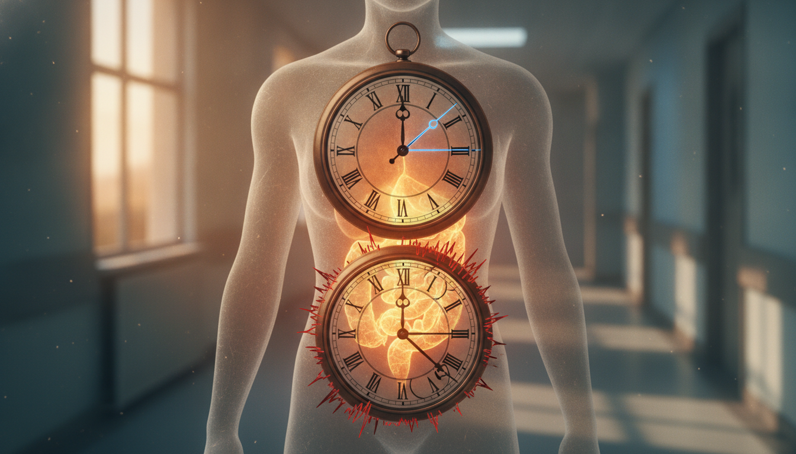

The Myth: 'Just Eat Healthy, And Your Gut Will Adapt'
The advice echoes in every wellness blog: 'Just eat clean, and your body will figure it out.' For those on a predictable schedule, maybe. For you, clocking in when the world sleeps, this isn't just an oversimplification; it's a betrayal of your biology. Night shifts don't merely steal your sleep; they wage war on your internal systems, especially your gut.
Your body's internal clocks—your circadian rhythms—shatter when you work against the natural light-dark cycle. Your gut, with its own delicate internal timing, feels the assault first. This circadian misalignment isn't an inconvenience; it actively alters your gut microbiota composition. It slashes diversity and fuels pro-inflammatory bacteria, a state called gut microbiota dysbiosis. What does this mean? Your gut fights to process food, even healthy food, the way it should.
That's why night shift workers suffer gut health issues at rates 3 to 5 times higher than the general population. Up to 30% report functional dyspepsia. Your gut's clock is far more sensitive to when you eat than your brain's is to when you sleep. This makes meal timing a critical, often overlooked, weapon in the battle for shift work gut health. Does that sound like 'adaptation' to you?
Three night shifts. That's all it takes.Myth 1: Your Gut Clock Doesn't Care About Your Shift Schedule
Three night shifts, for instance, drastically shift your digestive system's internal clock by a full 12 hours. Research from the University of Surrey confirms this (The Guardian (University of Surrey study), 2018). Contrast that with your brain's master clock, the suprachiasmatic nucleus (SCN), which only budges about two hours in the same period. This stark difference creates a profound circadian misalignment, a kind of internal time zone chaos where your gut thinks it's noon when your brain knows it's midnight.
This disconnect means your digestive system isn't ready. Even if you're eating carefully. Eating at these biologically 'incorrect' times sends conflicting signals throughout your body, disrupting the precise release of digestive enzymes and altering gut motility. Hormonal imbalances compound the problem: light and activity suppress melatonin, which typically rises at night to signal sleep. Meanwhile, cortisol, your waking hormone, spikes at odd hours. This hormonal confusion further impacts your digestive capacity, leading directly to the bloating and discomfort you feel when your system can't process food efficiently.
That constant bloat, the unpredictable gut rumblings—many shift workers shrug it off as 'just part of the job,' a badge of honor for sacrificing normal hours. But it’s not normal. And it's certainly not harmless.Myth 2: Bloating and IBS Are Just 'Part of the Job' for Shift Workers
The chronic disruption of your circadian rhythm does far more than just confuse your hormones; it fundamentally reshapes your internal world. Shift workers face an 81% increased prevalence or incidence of Irritable Bowel Syndrome (IBS) compared to their non-shift working counterparts. This isn't just discomfort; it's a diagnosed condition. A breakdown.
The mechanism is clear: shift work throws your gut microbiota, the trillions of bacteria living inside you, into dysbiosis. It alters their composition and allows pro-inflammatory genera like Escherichia/Shigella to flourish. This altered balance leads to increased visceral sensitivity—your gut literally feels more pain—and gut barrier dysfunction. Your intestinal lining, a tight shield, compromises, letting undigested food particles and toxins 'leak' into your bloodstream. This triggers systemic inflammation. What feels like a nuisance is your body signaling a deeper systemic issue. A battle you're losing.

Myth 3: Just Eat Less, Or Only 'Light' Foods During Your Night Shift
The common refrain for night shift workers boils down to: 'eat less, eat lighter.' This advice, while seemingly logical, sidesteps the core problem of a compromised gut lining. You diligently swap your usual meal for a salad or a piece of fruit, only to find the bloating persists. The issue isn't the caloric load; it's the physiological load and the timing. Many shift workers with gut distress show similar dietary patterns to those without. The difference? Your body's disrupted internal clock and its crippled ability to process food efficiently.
This is where chrononutrition becomes your most powerful tool. Your digestive system has its own circadian rhythm, and constant night-time eating throws it into disarray. Stop focusing solely on what you eat during your shift. Prioritize strategic 'anchor meals' at consistent times during your primary daytime wake window. These meals act as a signal, helping to stabilize your gut's internal clock and reinforce its natural digestive rhythm.
Then, shift your focus to active repair. During your primary eating window, intentionally incorporate foods that nourish and rebuild the gut barrier. Think bone broth, rich in collagen and amino acids. Fermented foods like kimchi or sauerkraut, teeming with beneficial bacteria. And soluble fibers from cooked vegetables or oats, which feed your gut microbiome. These aren't just 'light' choices; they are foundational ingredients for healing the very gut barrier dysfunction causing your discomfort. The goal isn't just to avoid triggers. It's to actively build resilience. It's to fortify your defenses.
Building that resilience requires a deliberate, consistent strategy, even when your schedule fights against it. Your gut thrives on regularity. Shift work makes 'regular' a moving target, but you can establish anchors that provide stability. This isn't about perfection; it’s about making the best choices possible within your unique constraints, systematically supporting your gut’s repair mechanisms. It's about fighting back.Your 3-Step Gut-Healing Protocol for Rotating Shifts
1. Establish Your Anchor Meal
Your body expects food at certain times. This rhythm is chrononutrition. On your 'off' days, eat your largest, most nutrient-dense meal within 1-2 hours of waking. This sets a consistent 'start eating' window. You then replicate or shift this minimally on your workdays. This practice, a form of time-restricted eating (TRE), helps align your digestive system with your internal clock, even when that clock shifts (University of Surrey, 2018). It maintains metabolic health in the face of circadian disruption (University of Melbourne, 2026). It signals to your metabolism when to be active and when to rest.
2. Prioritize Gut-Repairing Foods
Focus on foundational foods that actively support your gut lining and microbiota. Lean proteins, healthy fats, and fiber-rich vegetables are staples. Incorporate bone broth, collagen, and fermented foods like sauerkraut or kimchi into your diet whenever possible. These ingredients provide essential amino acids, prebiotics, and probiotics that directly repair the gut barrier and foster a diverse, healthy microbiome (PMC, 2025).
3. Strategic Snacking and Hydration
If you must eat during your night shift, choose small, easily digestible snacks. Think nuts, a piece of fruit, or plain yogurt. Avoid heavy, processed meals that demand significant digestive effort when your body naturally slows down. Stay consistently hydrated with water, not sugary drinks or excessive caffeine. These disrupt both gut function and sleep (Medicine, 2022). Crucially, finish any significant eating 2-3 hours before your planned sleep window to allow for digestion and prevent nocturnal reflux.
Your Gut-Healing Protocol:
Here's your battle plan:
- Anchor Your First Meal: Eat your main meal within 2 hours of waking on off-days; aim for a consistent 'first bite' time daily.
- Prioritize Repair: Include lean protein, healthy fats, fiber-rich vegetables, and fermented foods in every major meal.
- Hydrate Smart: Drink water consistently throughout your shift and off-time; limit sugary drinks and excessive caffeine.
- Snack Light, Sleep Better: Choose small, digestible snacks on shift. Stop all significant eating 2-3 hours before sleep.
- Listen to Your Body: Pay attention to how different foods impact your bloating and adjust your choices accordingly.
Sources:
- PMC. Systematic Review: The Role of Dietary Interventions in Modulating Gut Microbiota and Barrier Function. 2025.
- University of Melbourne. Circadian Rhythms and Metabolic Health. 2026.
- The Guardian. Shift work and meal timing: University of Surrey study finds impact on metabolism. 2018.
- Medicine (Journal). Impact of Shift Work on Eating Patterns and Metabolic Health: A Review. 2022.
This is not medical advice. Talk to your provider.
Reclaiming control over your gut health, even amidst the demands of shift work, isn't about comfort. It's a strategic move for your long-term resilience. Your body demands it.